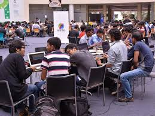
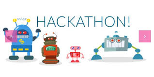

Hackathons
From Wikipedia, the free encyclopedia
A hackathon (also known as a hack day, hackfest, datathon or codefest; a
portmanteau of hacking marathon)
is a design sprint-like event; often,
in which computer programmers and others involved in software
development, including graphic designers, interface designers, product
managers, project managers, domain experts, and others collaborate
intensively on software projects.
The goal of a hackathon is to create
functioning software or hardware by the end of the event. Hackathons
tend to have a specific focus, which can include the programming
language used, the operating system, an application, an API, or the
subject and the demographic group of the programmers. In other cases,
there is no restriction on the type of software being created.


The benefits of participating in a hackathon
For anyone looking to enter the tech field, participating in a hackathon can be a great learning experience and offers a unique opportunity to build a powerful network.
Types of Hackathons
Depending on whether the event is participant-focused or output-focused, different types of hackathons are conducted for solving problems, altruism, branding, recruitment, product feedback, engagement, and so on. The different types of hackathons are as follows:
- Internal hackathons
- External hackathons
- Online hackathons
- Offline hackathons
- Application-based hackathons
- Hackathons based on a specific programming language
- Hackathons dedicated to a cause
- Hackathons for specific demographic groups
- Code Sprint
- Industry-specific hackathons
| Keep them in mind...they might be of help | |
|---|---|
| Dos | DON’Ts |
| Do pair up with people you haven’t met before | Don't spend the entire time in the hacking space |
| Do accept that your stress personality will come out | Don’t underestimate the power of non-technical teams |
| Avoid miscommunication | Don’t forget the developer community |
| Choose the right platform | DON’T be a perfectionist |
| Remember to have fun | DON’T be a perfectionist |
How to find a hackathon near you?
Here are a few websites:
Some frequently used terminology in hackathons
- Dev
- Dev is short for “developer”
- Pitch
- Pitch is a quick presentation of a product, service or business.
- MVP
- Abbreviation of Minimum Viable Product, MVP is nothing more than a type of test. In a hackathon, it’s the prototype you deliver from your project.
To know more about Hackathons👇
Making a series can sometimes feel like you're keeping a secret for months until it comes out; so when it finalizes in front of you, if you like the final product, it can be very exciting. - Author: Tom Weston-Jones